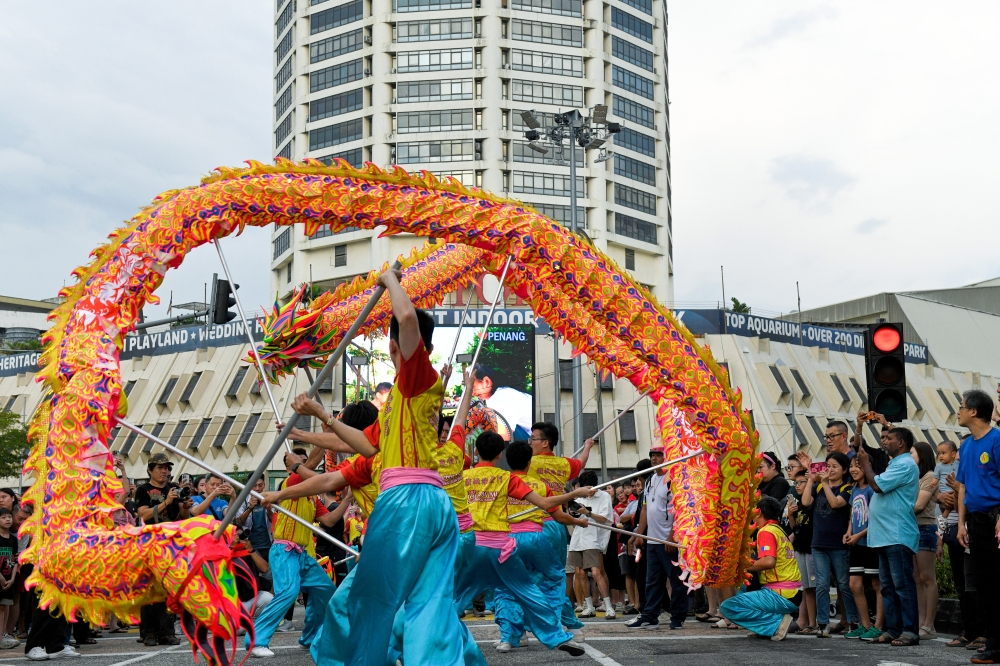

Thaipusam
A vibrant Hindu festival celebrated mostly at Batu Caves, where devotees carry elaborate 'kavadis' as a form of penance. The procession is a mesmerising display of faith.
→
Hari Raya Aidilfitri
Marking the end of Ramadan, this joyous celebration features open houses, traditional delicacies like rendang, and forgiveness.
→
Chinese New Year
The biggest festival for the Chinese community, filled with lion dances, red packets (ang pow), and family reunion dinners.
→
Deepavali
The Festival of Lights celebrated by Hindus with colorful kolams, oil lamps, and an abundance of sweet treats.
→
Gawai Dayak
A major harvest festival celebrated by the indigenous Dayak people of Sarawak, marked by traditional dances and tuak (rice wine).
→
Kaamatan
Sabah's harvest festival honoring the rice spirit, featuring the famous Unduk Ngadau (harvest beauty queen) pageant.
→
Wesak Day
Commemorating the birth, enlightenment, and passing of Buddha, observed with candle-lit processions and charitable acts.
→
Mooncake Festival
Celebrated in autumn with beautiful lantern processions and sharing of delicious mooncakes among friends and family.
→
Rainforest World Music Festival
An international music festival held in Sarawak, blending indigenous music with global world beats in a jungle setting.
→
Penang Chingay
A massive street parade featuring towering giant flag balancing acts, dragon dances, and colorful floats.
→